<div class="textcontainer">
<p class="margin"> </p>
<h3>Week 2: 2D Design & Cutting</h3>
<p class="margin"> </p>
<div class="flexrow">
<a id="btn" href="./week2.zip" download>Download the files from this week!
</a>
</div>
<p class="margin"> </p>
<h4>Assignment 1: Make a Box</h4>
Here is the outline for my box. I decided to make a box with holes in the side so you can hold it, and
also, because I like sloths, it has a sloth holding onto the box peaking its head out cutely!
I learned that when you download sketches to laser cut, everything should be in one sketch, so I projected all
my separate sketches into one before 3d printing. The lines in the sketch appear faintly because they are projected
lines, but here is a close up of the sloth face.
<div style="display: flex; align-items: center; gap: 15px; flex-wrap: wrap;">
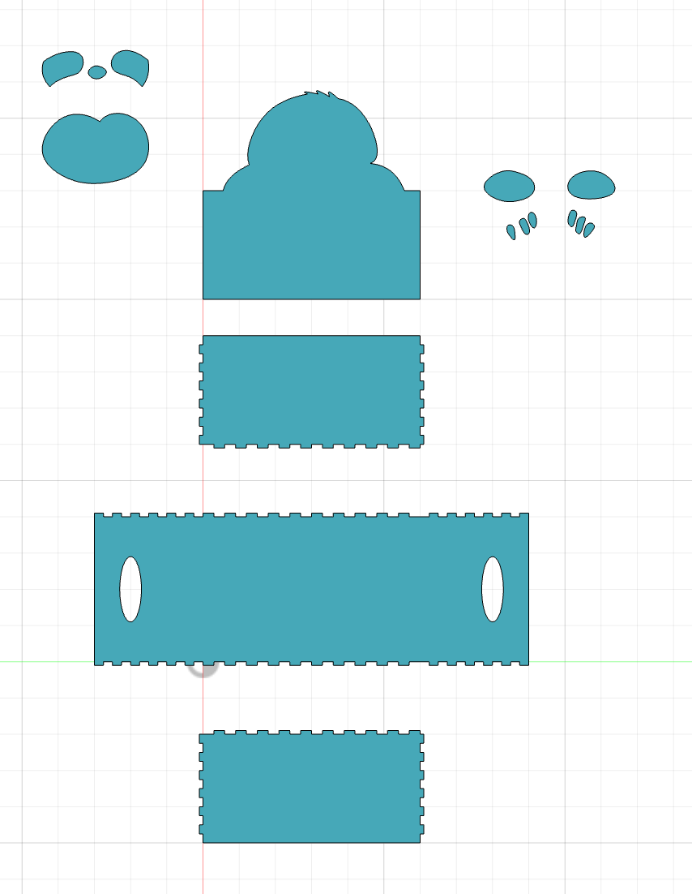
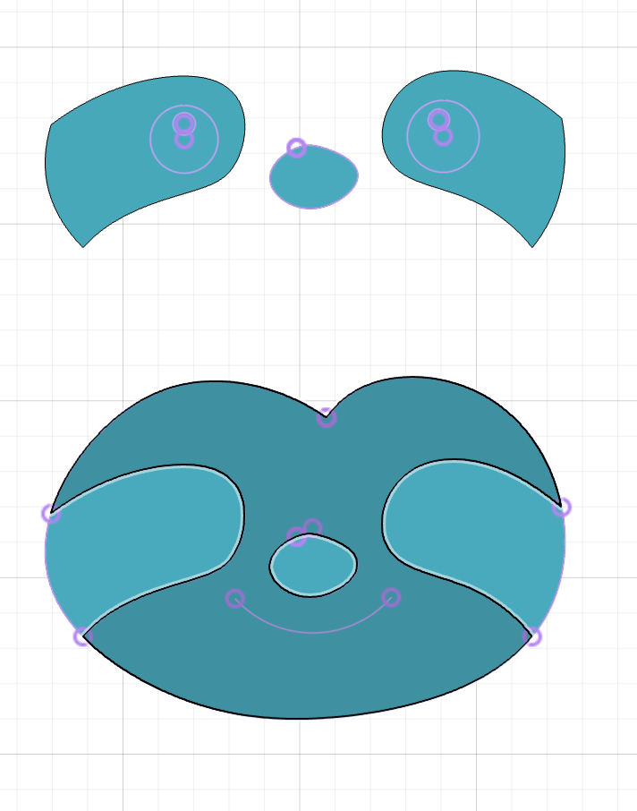
</div>
One I laser cut the components, I put together the base of my box, and then created the sloth face in 3 layers, which
I hot glued together. It ended up looking like this.
<div style="display: flex; align-items: center; gap: 15px; flex-wrap: wrap;">
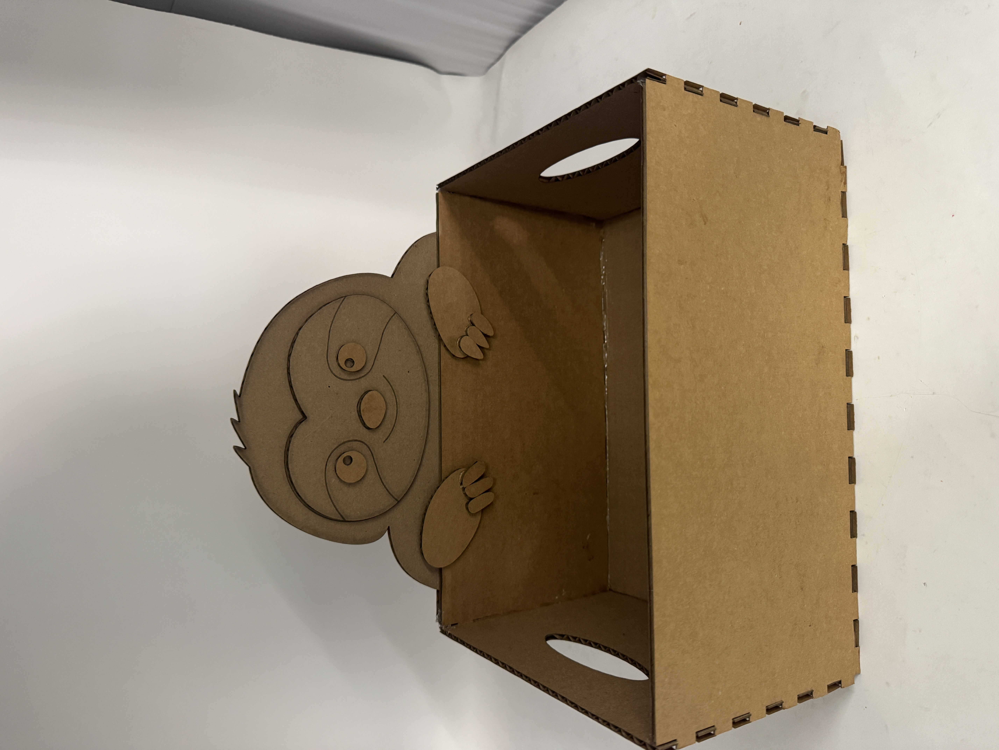
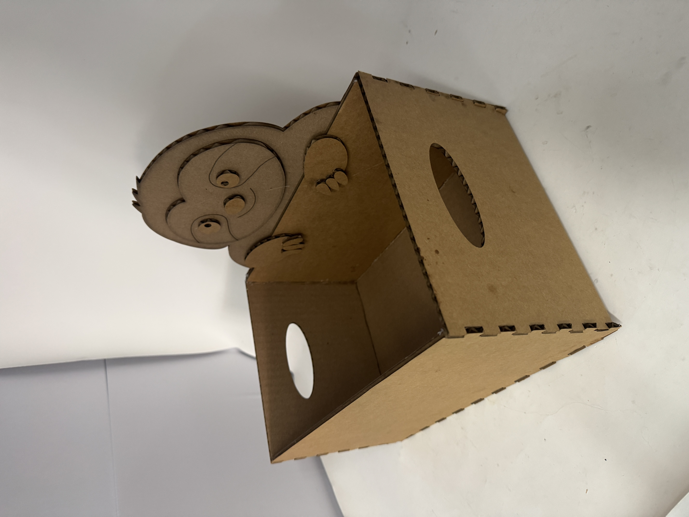
</div>
<h4>Assignment 2: Fusion 360 Tutorial</h4>
I followed some of the listed tutorials on the website, but then just tried to play around with as many of the functionalities as possible.
In particular, I learned about 3D shapes, extruding/cutting/revolving sketches, and mirroring/creating repeated patterns on objects.
Look at this weird thing!<br>
<div style="display: flex; align-items: center; gap: 15px; flex-wrap: wrap;">
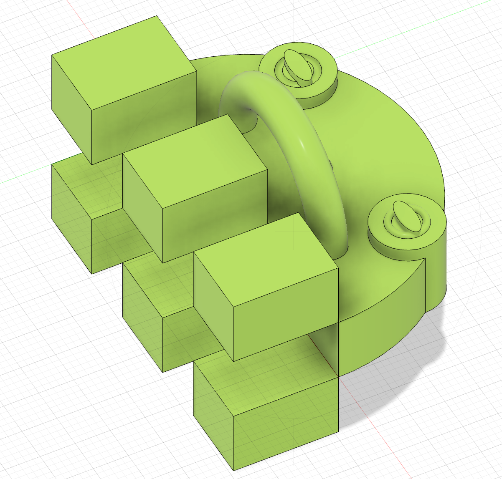
<img src="./tutorial2.png" style="width: 30%" alt="Fusion 360 tutorial">
</div>
<h4>Assignment 3: Fusion Modeling</h4>
For my first household object, I picked my waterbottle. It had a lot of different parts and weird shapes
so it was a good way to learn fusion. I started with the main orange part, which I mainly created by extruding
sketches from splines in the shape of the waterbottle profiles, and then cutting/trimming based on an arc
that got the shape of the curvature in the other profile. For the top profile, I also extruded the shape based
on measurements I took (and eyeballing) of the top of the waterbottle. Then, to create the lid/handle, I created a
new component. I learned about projecting lines from other sketches/components to a new component. I had a lot
of difficulty figuring out how to get the shapes right– I originally tried to press pull the lines out, but that
didn't work on both sides, so I ended up just having to manually draw a sketch based on the projected lines.
This was great practice with using the constraints functionality, especially with projected lines from different
sketches/components. Finally, I made the hinge, which was just a cylinder. Then, I created a revolving joint between
the hinge and the lid + a rigid relationship between the water bottle and the hinge, and set constraints on the
degrees of rotation.
<div style="display: flex; align-items: center; gap: 15px; flex-wrap: wrap;">
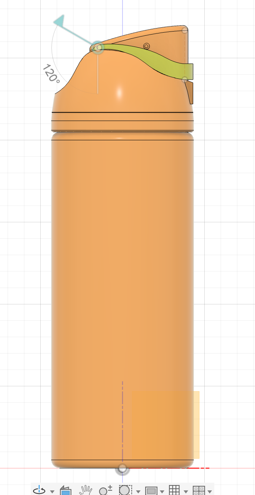
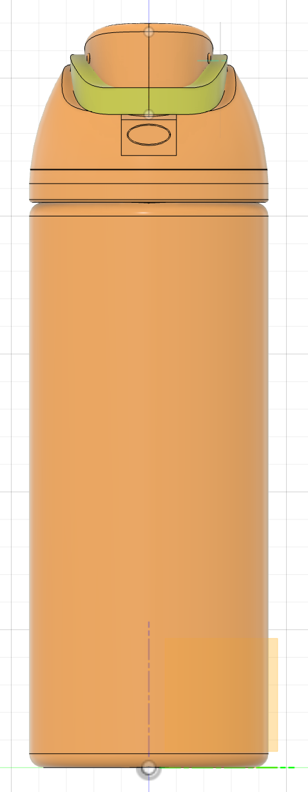
<video controls style="width: 30%; flex-shrink: 0; max-width: 400px;">
<source src="./owala.mp4" type="video/mp4">
Your browser does not support the video tag. <a href="./owala.mp4">Download the video</a> instead.
</video>
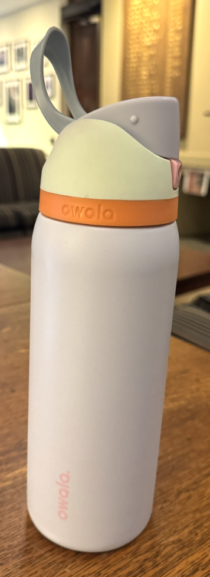
</div>
For my second household object, I made my key fob. This one was relatively straightforward after the waterbottle,
but I got to practice more with filleting and extrusion and sketches.
<div style="display: flex; align-items: center; gap: 15px; flex-wrap: wrap;">
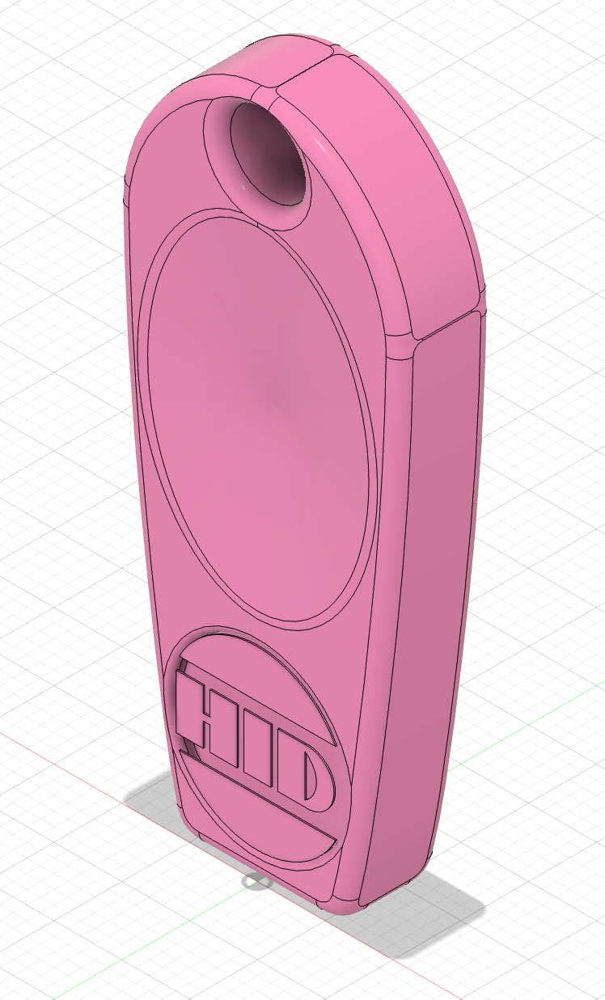
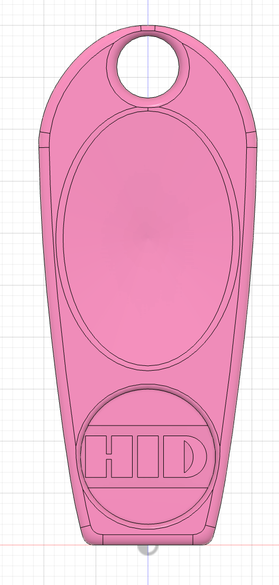
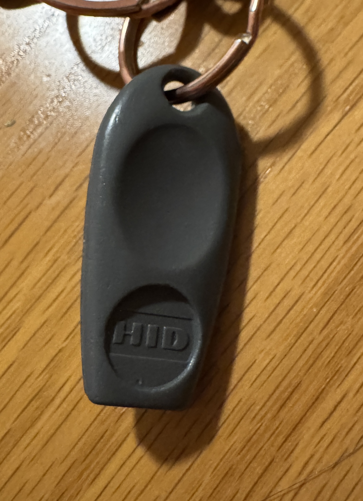
</div>
</div>